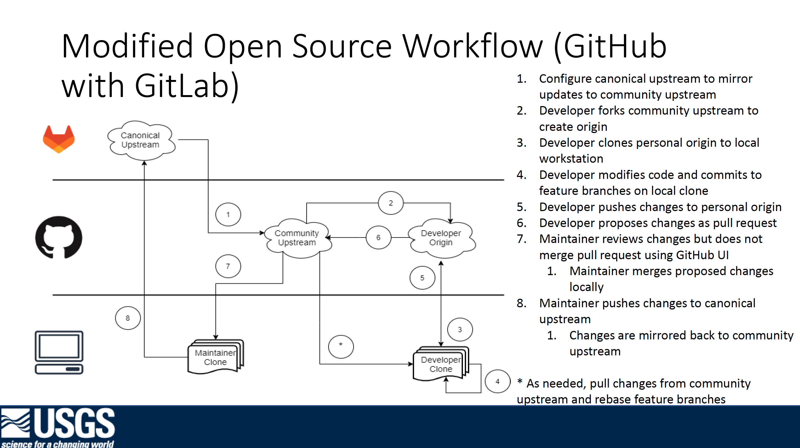

Contributing
Contributions are welcome from the community. Questions can be asked by opening issues. Before creating a new issue, please take a moment to search and make sure a similar issue does not already exist. If one does exist, you can comment to show your support for that issue.
If you have direct contributions you would like considered for incorporation into the project, you can fork the repository and submit a pull request for review. Prior to beginning work on substantial feature development, we ask that you first open an issue or contact code maintainers to help formulate the scope of the work effort, and to ensure that someone else is not already working to implement the same thing!
Contribution Workflow
The "canonical" repository for this project is the GitLab Repository. Contributions and development can be done on GitHub, but no merges or commits can be performed there. The GitHub repository is actually a mirror of the GitLab project. Therefore, commits must be made by a maintainer on the GitLab project which are then mirrored to the GitHub repository. The workflow below illustrates this process.
Development can happen on GitHub, however the pull requests will be incorporated on GitLab which is then mirrored back to GitHub. This requires a maintainer with write-access on GitLab to take changes from the pull request and push them up to GitLab instead of accepting the pull request on GitHub. Doing this correctly will preserve the authorship of the changes and commits, and will also close the GitHub pull request and any associated issues.
